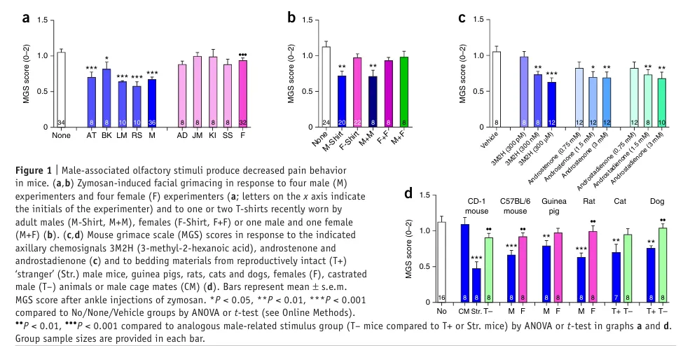
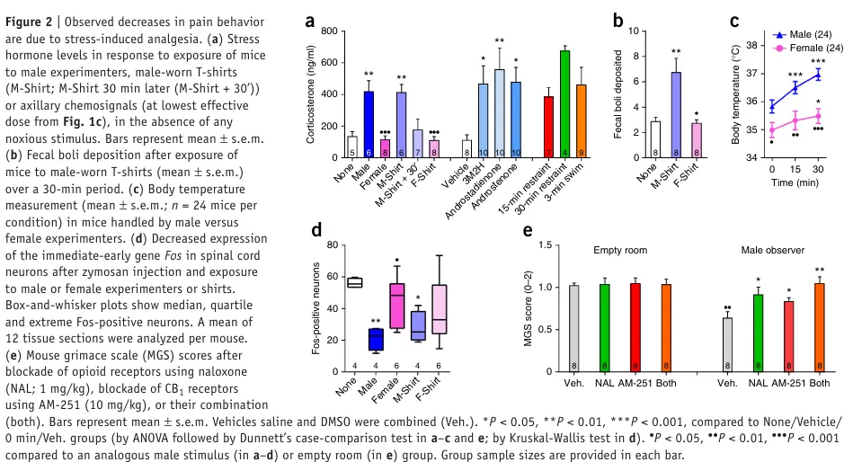
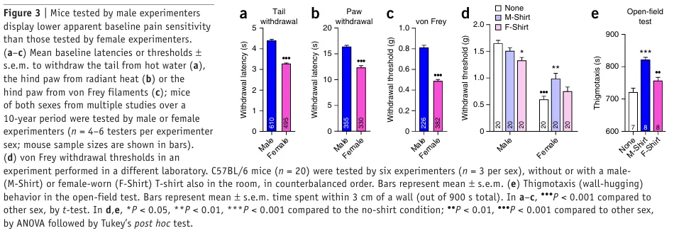
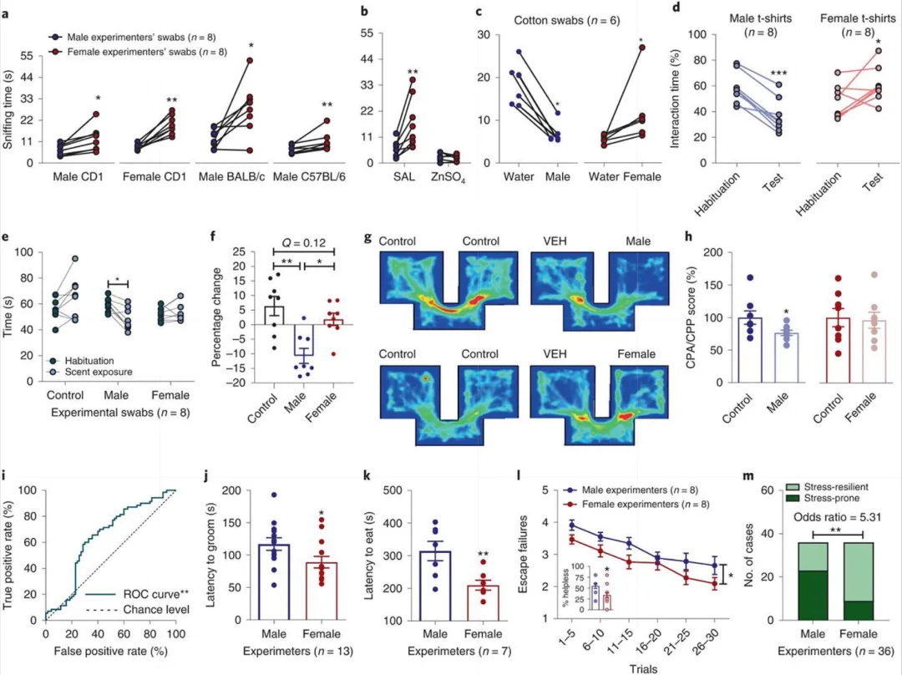
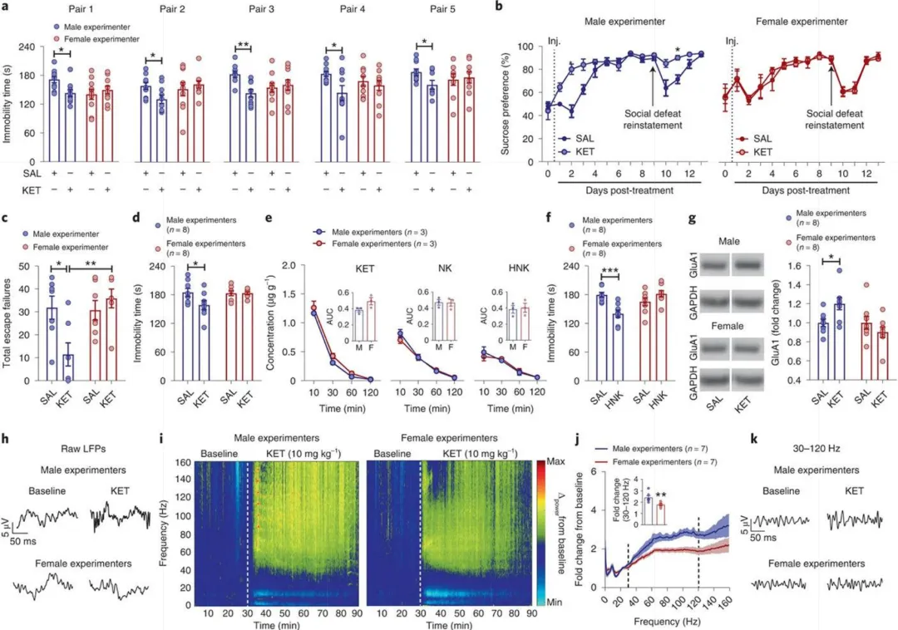
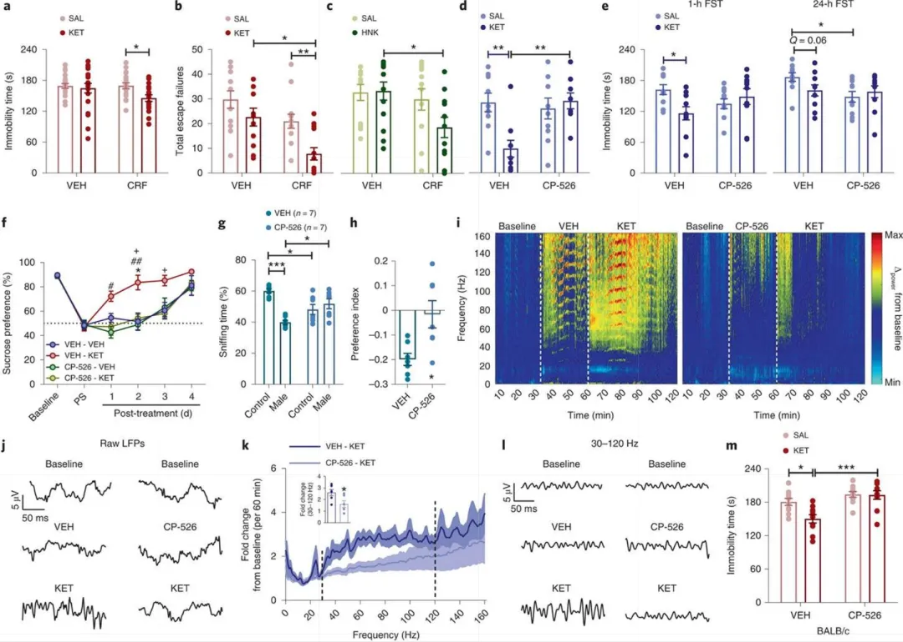
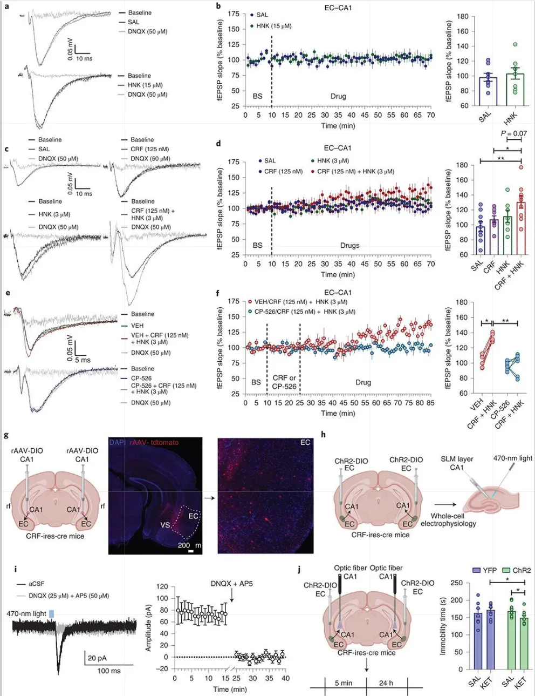
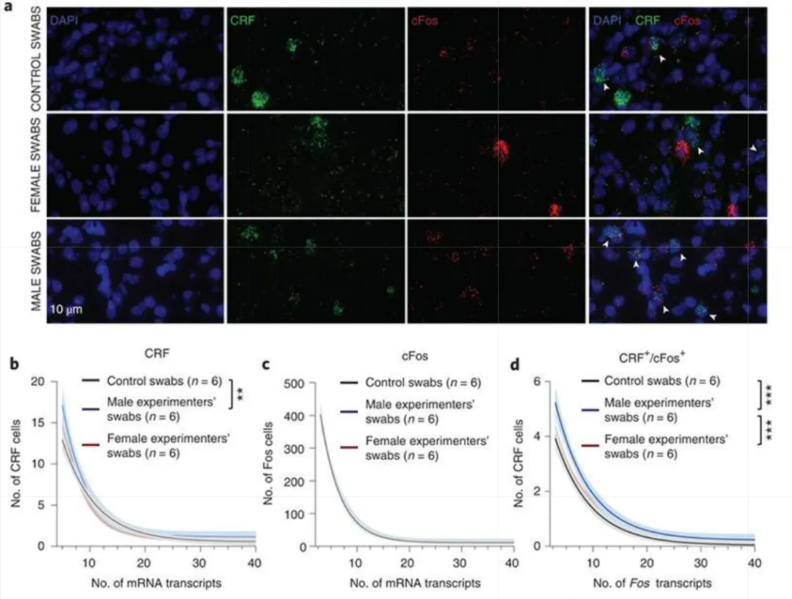
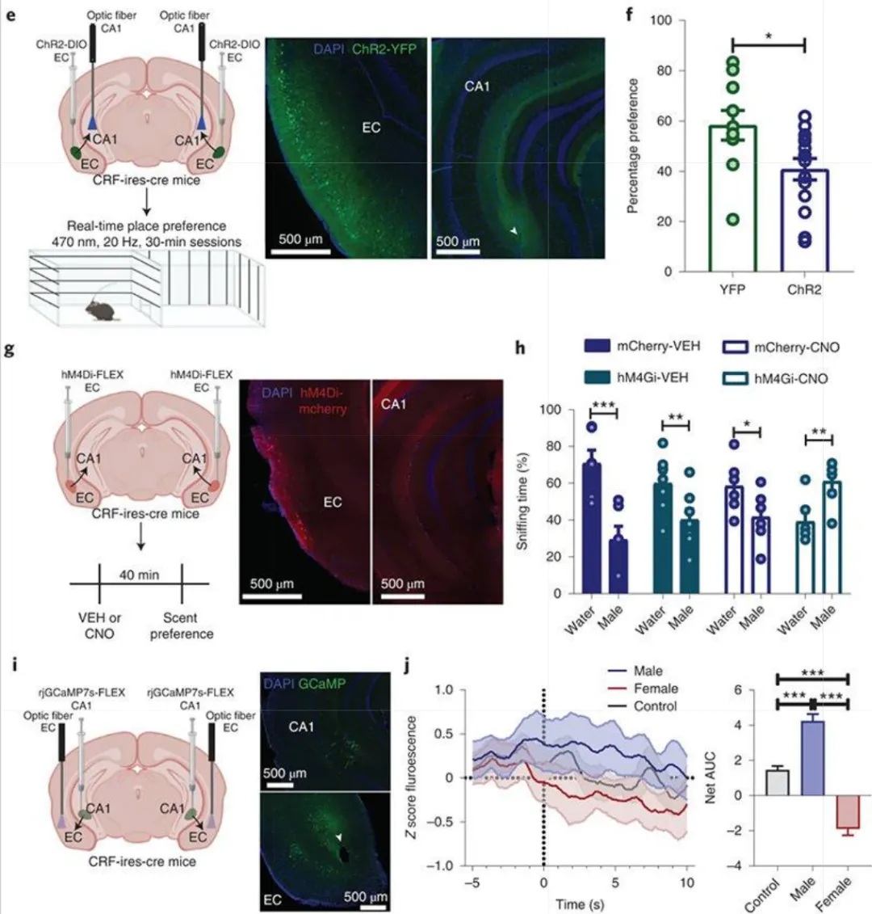

实验小鼠更喜欢GG还是MM？
原文：https://mp.weixin.qq.com/s?__biz=MzAwMzIzOTk5OQ==&mid=2247528015&idx=1&sn=cc0841a34022c602b8692505c2bb8b29&chksm=9b3c171fac4b9e0972aa74b9f28dba4eae61c9be862eb2c55c9bec2f0d3a7aa8946e5d551b49#rd 合集：文献速递
写在前面
不知道大家有没有想过，实验小鼠是否真的对实验者的性别存在偏好？也就是说，实验小鼠更喜欢GG还是MM？实验者的性别到底会不会影响实验结果？如果有，又会在哪些方面产生影响呢？ 不懂就搜，我们找到了两篇发表于Nature子刊的高水平研究： 第一篇由加拿大Robert E Sorge团队于2014年发表在Nature Methods（IF=36.1），揭示了啮齿类动物对男性实验者气味的独特应激反应。研究发现，男性实验者（或其气味刺激）可诱导啮齿动物产生显著的应激性镇痛效应，这一现象可通过多种男性相关气味刺激（如穿过的T恤、雄性哺乳动物垫料等）稳定重现。研究强调了实验者性别作为关键变量对行为学实验结果的重要影响。 第二篇由美国马里兰大学团队于2022年发表在Nature Neuroscience（IF=21.2），进一步阐明了实验者性别影响小鼠行为的神经机制。研究发现，小鼠对男性实验者气味表现出厌恶反应，这种反应由内嗅皮质-海马CA1区的CRF神经元介导。值得注意的是，男性实验者气味不仅增强了小鼠的应激易感性，还显著影响了氯胺酮的抗抑郁效果。该研究为解释实验室结果难以重复的现象提供了新的视角，强调了控制实验者性别变量的重要性。从这两项研究的结果来看，啮齿类动物确实表现出对女性实验者的偏好，以及对男性实验者的应激反应。
第一篇文献主要内容
为了研究小鼠的疼痛反应，科学家们使用了一种小鼠面部表情量表（Mouse Grimace Scale, MGS）工具。这个量表通过观察小鼠的面部表情变化来评估它们的疼痛程度。具体来说，小鼠的疼痛表情包括眼睛眯起、鼻子鼓起、耳朵后缩等。科学家们给小鼠注射了一种炎症诱导剂，然后观察它们在实验者在场或不在场时的面部表情变化。 实验分为三组： 男性实验者组，四名男性实验者坐在距离小鼠约0.5米的地方； 女性实验者组，四名女性实验者同样坐在距离小鼠约0.5米的地方 ；无实验者组，小鼠在没有实验者的房间里进行测试。实验结果很有趣：当男性实验者在场时，小鼠的面部疼痛表情显著减少，平均减少了36%。而女性实验者在场时，小鼠的疼痛表情几乎没有变化。 为了进一步验证这个现象，科学家们还做了一些补充实验： T恤实验：他们让男性实验者穿过的T恤放在小鼠附近，结果发现，男性穿过的T恤也能产生类似的镇痛效果，而女性穿过的T恤则没有这种效果。 化学物质实验：科学家们还测试了一些男性腋下分泌的化学物质，发现这些物质也能减少小鼠的疼痛表情。那么，为什么小鼠对男性实验者的反应如此不同呢？作者认为，这种现象可能与小鼠的应激反应有关。男性实验者的气味可能触发了小鼠的应激诱导镇痛（Stress-Induced Analgesia, SIA）机制。简单来说，当小鼠感到压力时，它们的身体会自动抑制疼痛反应，这是一种自我保护机制。 为了验证这个假设，科学家们测量了小鼠在暴露于男性实验者气味后的皮质酮水平（一种应激激素）。结果发现，男性实验者的气味确实让小鼠的皮质酮水平显著升高，这与小鼠的镇痛反应一致。这种现象不仅存在于小鼠身上，还可能在其他啮齿动物中也存在。



第二篇文献主要内容
1、 人类实验者的气味会调节（实验对象的）行为反应
-
作者首先评估了 CD1、BALB/c 和 C57BL/6J 品系小鼠对人类男性和女性皮肤擦拭棉签的互动偏好。雌雄小鼠皆偏好女性气味棉签 （图 1a），经硫酸锌处理致嗅觉缺失的小鼠无此偏好 （图 1b）。水棉签对照与男女皮肤棉签，小鼠厌男喜女 （图 1c）。在实时位置偏好实验中，小鼠偏好女实验者穿过的 T 恤（图 1d ）。
-
接着，作者通过Y 型迷宫 探究小鼠对不同气味的反应，发现其在含男性实验者气味的臂中停留时间更短 （图 1e、f）。在厌恶实验中，男性实验者气味引发小鼠位置厌恶，女性则未引起明显偏好或厌恶（图 1g - i）。在多种行为测试中，由男性实验者处理的小鼠比女性实验者处理的小鼠表现出更强的应激反应和焦虑。

2、实验者的性别会对药物治疗产生影响
- 作者在这部分内容中探究了实验者的性别对小鼠氯胺酮（KET）治疗反应的影响。常规实验中，男性实验者注射 KET 能减少多组小鼠（如 CD1 等）在强迫游泳测试中的静止时间，改善慢性社会挫败应激、不可逃避电击等指标（图 2 ），其他实验室也有类似发现，且性别内反应差异非药代动力学所致。在 KET 致活动过度及、NMDAR 拮抗剂作用、地昔帕明不受实验者性别影响。生物安全柜实验表明男性气味与 KET 抗抑郁效应有关（扩展数据图 4）。机制上，男性实验者施用 KET 使小鼠腹侧海马体相关受体亚基水平及脑电图特定频段功率变化更显著，体现其对 KET 抗抑郁的影响（图 2g - k ）。

3、促肾上腺皮质激素释放因子（CRF）在实验者性别所产生的效应中起到介导作用
- 作者指出，虽有报道称急性暴露于男性实验者气味会使小鼠下丘脑 - 垂体 - 肾上腺（HPA）轴活性升高，但抑制皮质酮合成并不能阻止男性实验者施药（KET）对 CD1 小鼠的行为效应。鉴于促肾上腺皮质激素释放因子（CRF）在 HPA 轴激活中的作用，作者探究其是否介导实验者气味对 KET 抗抑郁样反应的影响。发现脑室内注射 CRF 后再由女性实验者在生物安全柜内施药（KET 或其代谢物），可减少小鼠强迫游泳测试中的静止时间及习得性无助范式中的逃避失败次数。相反，外周给予 CRFR1 拮抗剂 CP - 154,526 能阻断男性实验者施药（KET）产生的抗抑郁样效应，减轻小鼠对男性气味的厌恶感，并消除 KET 诱导的皮质振荡增强现象。
** **

- 接下来作者回顾了前人的成果，指出 KET 及（2R,6R）-HNK 可增强海马体相关通路突触增强且关联抗抑郁反应，又因发现男性实验者施 KET 时海马体特定亚基才增加，推测海马体参与实验者性别影响。 进而，为探 CRF 与 KET 抗抑郁反应机制，测海马脑片不同投射刺激后的电位变化，发现（2R,6R）-HNK 对不同投射影响有别，且 CRF 与（2R,6R）-HNK 联用可诱导特定突触增强，该增强能被拮抗剂阻断。随后，假设 EC 到 CA1 存在关键 CRF 神经元投射，经示踪研究及电生理技术证实并明确相关电流性质。为验投射中 CRF 神经元激活介导 KET 抗抑郁这一假设，给小鼠注射病毒后进行光遗传刺激与施药，发现此操作可使小鼠强迫游泳测试静止时间缩短，说明激活该投射能模拟男性气味效应，助小鼠响应 KET 抗抑郁作用。

- 基于内嗅皮质（EC）在嗅觉处理中的重要性，作者推测男性气味可激活 EC 到 CA1 的 CRF 神经元，影响相关突触对药物的反应。作者发现小鼠接触男性皮肤棉签后，EC 的 CRF 转录及 CRF/Fos 共标细胞数增加，证实男性气味能激活 EC 的 CRF 神经元。然后，通过实时位置偏好实验，表明激活 CRF 的 EC - CA1 投射可产生类似男性气味的厌恶效果。之后，验证抑制 EC - CA1 传递能逆转小鼠对男性气味的厌恶，说明 EC 中 CRF 神经元活性介导此厌恶反应。用体内光纤光度法记录，显示小鼠遇男性气味时 EC - CA1 投射的 CRF 神经元活性增加，证实该通路对男性气味有反应。


最后聊聊
小编有一个脑洞：这是否和生存策略的进化记忆有关呢？雄性哺乳动物（包括人类）的体味中含有更高浓度的雄烯酮等挥发性化合物，这些分子在自然界中常与领地标记、竞争威胁等信号相关。这或许解释了为何小鼠对男性气味「如临大敌」——它们的海马神经环路像一台扫描仪，将男性体味自动归类为「潜在危险信号」，进而触发应激性镇痛（痛觉钝化）这种「战斗或逃跑」的生存机制。此外，许多研究者将实验可重复性问题归咎于试剂批次或操作误差，却忽视了「实验者生物学属性」这一变量。例如：使用男性研究生操作的小鼠疼痛实验数据，可能天然比女性操作组低20%（镇痛效应导致）；抗抑郁药效评估若由男性主导实验，可能因小鼠CRF系统激活而低估药物真实效果。或许未来论文方法部分需要注明：「本实验由XXX名单身男/女性博士执行，体味浓度经气相色谱认证为XXX类型」。
参考文献
[1]Sorge RE, Martin LJ, Isbester KA, et al. Olfactory exposure to males, including men, causes stress and related analgesia in rodents. Nat Methods. 2014 Jun;11(6):629-32. [2]Georgiou P, Zanos P, Mou TM, et al. Experimenters' sex modulates mouse behaviors and neural responses to ketamine via corticotropin releasing factor. Nat Neurosci. 2022 Sep;25(9):1191-1200.
如何联系我们

 公众号后台消息回复不便，这里给大家留一下领取资料及免费服务器(免费两周学习版上架啦~)的微信号 ，方便各位随时交流（别问在么，添加时直接说来意）。呼声很高的交流群 也建好了，欢迎大家入群讨论：
公众号后台消息回复不便，这里给大家留一下领取资料及免费服务器(免费两周学习版上架啦~)的微信号 ，方便各位随时交流（别问在么，添加时直接说来意）。呼声很高的交流群 也建好了，欢迎大家入群讨论：
大家可以阅读完这几篇之后添加给生信入门初学者的小贴士 如何搜索公众号过往发布内容
已有生信基地联系方式的同学无需重复添加

 您点的每个赞和在看，我都认真当成了喜欢
您点的每个赞和在看，我都认真当成了喜欢